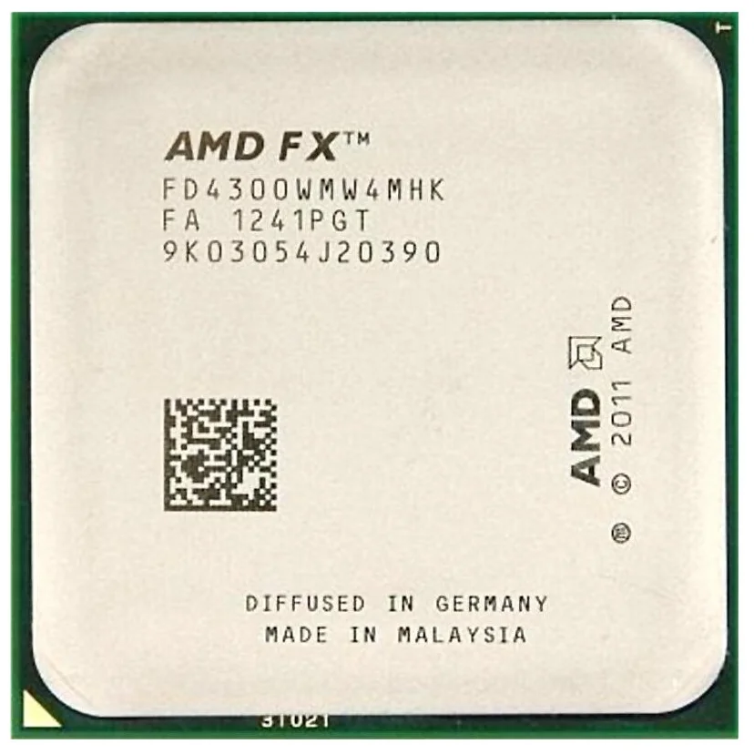
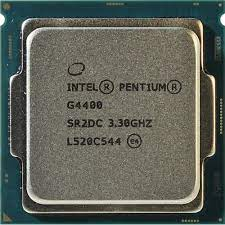
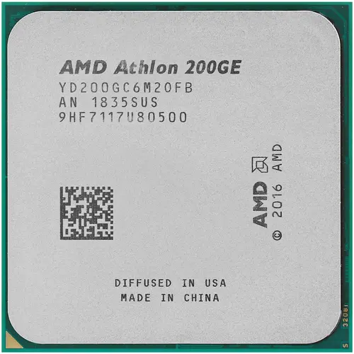
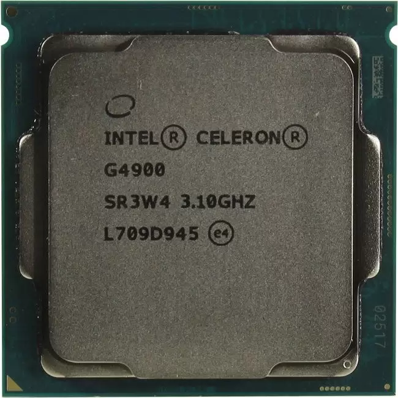
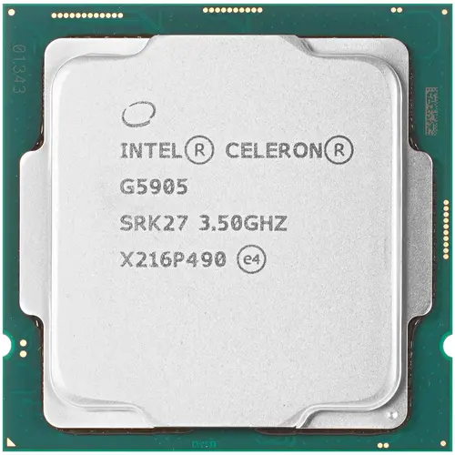
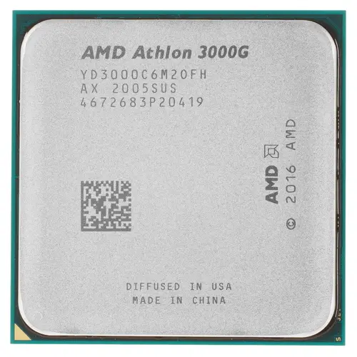
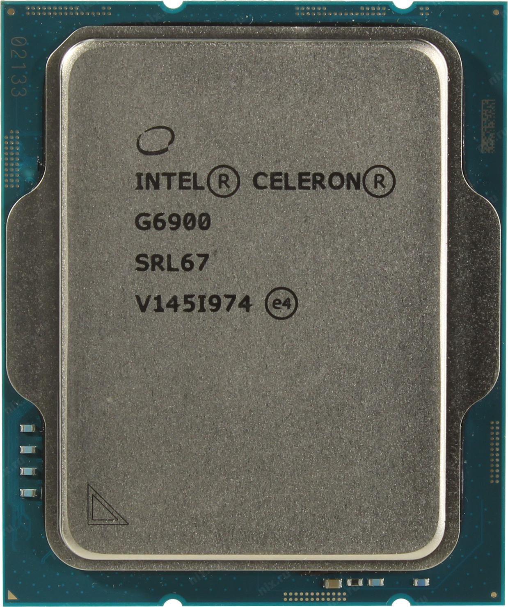

Самые популярные процессоры
AMD FX-4300
Процессор AMD FX-4300 BOX оснащен четырьмя вычислительными ядрами, обеспечивая высокую производительность при обработке требовательных ресурсов и работы в многозадачном режиме. Ядра функционируют с номинальной тактовой частотой на уровне значения 3.8 ГГц, которая способна повышаться благодаря разблокированному множителю и фирменной технологии разгона до значения 4 ГГц. Процессор AMD FX-4300 предусматривает совместное функционирование с оперативной памятью объемом не более 128 ГБ. Показатель тепловыделения на уровне 95 Вт позволяет устанавливать процессор в портативные компьютеры.
2050₽
КупитьIntel Pentium G4400
Благодаря процессору Intel Pentium G4400 можно собрать компьютер начального уровня для работы в популярных офисных программах. Модель стала обладательницей 2-ядерной конфигурации с неизменной частотой 3.3 ГГц, чего будет достаточно для решения нересурсоемких задач. Чипсет создан на базе микроархитектуры Intel Skylake-S и выполнен по техпроцессу 14 нм, что позволило добиться низкого энергопотребления. Благодаря трехуровневому кэшу система получит оперативный доступ к данным, к которым она обращается чаще всего.
Процессор Intel Pentium G4400 поддерживает работу с оперативной памятью объемом до 64 ГБ, благодаря чему можно добиться высокой производительности компьютера для стабильной работы в многозадачном режиме. Поддержка режима ECC позволит задействовать чипсет в сервере с плашками ОЗУ, имеющими технологию коррекции ошибок. Благодаря интегрированному графическому ядру Intel HD Graphics 510 можно не задумываться над приобретением отдельной видеокарты.
2699₽
КупитьAMD Athlon 200GE
Процессор AMD Athlon 200GE OEM представляет собой производительное решение для домашней станции или рабочего ПК. Эта модель имеет два ядра с базовой тактовой частотой 3200 МГц и оснащается встроенным видеоядром Radeon Vega 3. ЦПУ с разъемом подключения AM4 совместим с большим количеством актуальных материнских плат. Он предполагает эксплуатацию с оперативной памятью DDR4, имеющей тактовую частоту в диапазоне 1600-2667 МГц.
Процессор AMD Athlon 200GE предлагается вам в комплектации OEM, которая предполагает поставку устройства без совместимой системы охлаждения. ЦПУ характеризуется наибольшим тепловыделением на уровне всего 35 Вт, поэтому для обеспечения стабильного отвода тепла ему не потребуется большая и сложная система охлаждения.
3799₽
КупитьIntel Celeron G4900
Процессор Intel Celeron G4900 – 2-ядерный чипсет, использующий для подключения востребованный сокет LGA 1151-v2. Модель функционирует на неизменной частоте 3.1 ГГц и справляется с нересурсоемкими задачами, что делает ее отличным решением для офисных компьютеров и серверов начального уровня. Добиться быстродействия при работе системы в режиме многозадачности позволит оперативная память объемом до 64 ГБ, которую поддерживает представленный чипсет.
Процессор Intel Celeron G4900 поддерживает режим ECC и может использоваться в рабочих станциях вместе с плашками ОЗУ, имеющими технологию коррекции ошибок. В данной модели присутствует интегрированное графическое ядро Intel UHD Graphics 610 для просмотра изображений на экране монитора при работе за компьютером. Базовое тепловыделение чипсета не превышает 54 Вт.
3899₽
КупитьIntel Pentium G4400
Процессор Intel Celeron G5905 представляет собой 2-ядерный чипсет начального уровня, подходящий для сборки домашнего или офисного компьютера. Созданная на базе архитектуры Intel Comet Lake-S модель использует 14-нанометровый техпроцесс, благодаря которому обеспечивается оптимальное сочетание производительности и энергопотребления. Для установки чипсета на материнскую плату используется популярный сокет LGA 1200. В работе устройство использует 2 производительных ядра, способных одновременно обрабатывать два вычислительных потока.
Процессор Intel Celeron G5905 функционирует на фиксированной тактовой частоте 3.5 ГГц. В данной модели предусмотрено интегрированное графическое ядро Intel UHD Graphics 610, которому под силу справиться с обработкой нересурсоемкой графики и ее выводом на экран монитора.
3899₽
КупитьAMD Athlon 3000G
Процессор AMD Athlon 3000G OEM с поддержкой технологии виртуализации вполне подходит для установки в домашний или рабочий компьютер. 2-ядерная архитектура процессора, созданная на основе техпроцесса GlobalFoundries 14LPP, обеспечивает высокую скорость выполнения заданных операций в 4-поточном режиме. Уровень тепловыделения при этом будет всего 35 Вт. Базовую рабочую частоту в 3.5 ГГц можно увеличить благодаря разблокированному множителю, что позволит повысить тем самым производительность процессора.
Процессор AMD Athlon 3000G OEM работает с оперативной памятью формата DDR4, объемом до 64 ГБ. Встроенное графическое ядро с максимальной частотой 1100 МГц предусматривает высокое качество графики при просмотре видео или работе в офисных программах. 6-линейный встроенный контроллер PCI-E 3.0 обеспечивает стабильную и высокоскоростную передачу данных при подключении процессора к материнской плате. Виртуализация позволит расширить функциональность компьютера, запустив на нем другую ОС.
3899₽
КупитьIntel Celeron G6900
Процессор Intel Celeron G6900 – 2-ядерная модель с тактовой частотой 3.5 ГГц, которая станет отличным выбором для сборки начального уровня. Созданный на базе архитектуры Intel Alder Lake-S чипсет эффективно справляется с нересурсоемкими задачами и программами, не предъявляющими высоких требований к характеристикам системы. Двухуровневый кэш обеспечит мгновенный доступ к наиболее часто запрашиваемым данным. 10-нанометровый техпроцесс Intel 7 способствует низкому энергопотреблению и тепловыделению устройства.
Процессор Intel Celeron G6900 поддерживает установку плашек ОЗУ DDR4 или DDR5 суммарным объемом 128 ГБ для работы в двухканальном режиме и повышения производительности системы. Наличие встроенного графического ядра Intel UHD Graphics 710 избавит от необходимости приобретения отдельной видеокарты.
6499₽
Купить